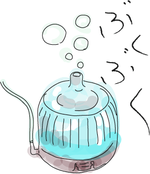

金魚のグッズには、金魚をを飼うのに必要なグッズと趣向的なグッズがあります。
金魚を飼う楽しみとして、見せ方も大きな要素であるのですが、こだち的には、まずは大きく健康にということで、ここでは金魚を飼うために必要なグッズを紹介してみたいと思います。（しかも、自分でつかってみたのだけ紹介します）
こだち的には、もっともっといろいろやりたいわけです。でも、いまはここまで。すんどめ効果をねらっています。
（なってないよ）


ぶくぶく
通称：ぶくぶくでおなじみのこれ。最も一般的なろ過装置です。金魚が呼吸するために水中にたくさん酸素をいれてやるためにいれると思われがちですが、じつは、水中のバクテリアにも酸素を供給しているわけで、これも重要なろ過装置なのです。
夏場だったかな？冬場だったかな？水中の酸素が減ってくるので他にろ過装置があったとしてもいれてあげるのがベストです。ちなみにぶくぶくのなかにもフィルターや砂利などがはいってることが多く、ここにバクテリアが繁殖したりします。なので、できることなら使い終わったあとも、完全に乾燥させることは避けて、水替えようのバケツのなかにでもいれておいてあげて、バクテリアが死滅しないように育てるほうがいいです。
上部フィルター（上部ろ過装置）
最近は上部フィルターというらしいです。むかしは上部ろ過装置といったそうな。もっとも一般的なろ過装置です。水槽の上部にとりつけるので、場所をとりません。ろ過能力もかなり優秀で、お手入れなんかもらくちんらくちん。古くなったフィルターを交換するだけです。（フィルターの交換は水替えとは一緒にやらないでください。フィルターを交換するとバクテリアが減ってしまうので水槽の水まで変えてしまうとバクテリアの量がぐっとへってしまって水が汚れてしまいます。）
上部フィルターの難点といえば、水がちょろちょろ流れる音と水槽の上部に取り付けるので、水槽の後ろが暗くなってしまうことですが、ろ過能力や簡便さを考えれば、おうちで金魚を飼うのであればこれが一番いいと個人的には思っています。ちなみに、水のちょろちょろ流れる音などは、わたしは好きです。わりと水流が強く、水槽の中に流れを作るのも特徴で、泳ぎが下手な金魚や、病気になっている金魚には向きません。そういうときには、水の出口を水槽の壁側に向けてやって流水の勢いをおさえてあげるとよいかと思います。
底面フィルター（底面ろ過装置）
わりとお気に入りで使っているろ過装置です。水槽の底面にひき、その上に砂利や砂をのせて使います。水槽内の砂利や砂に水の流れをつくります。基本的にろ過は、水槽内にいれた砂利や砂についたバクテリアがしてくれることになっています。お手入れのときは、水槽の砂利を全部だしたりと少し手間ですが、お手入れは１年に一回くらいでいいそうです。場合によっては２年に一回というひともおられます。なので、日常は手間いらず。泳ぎが下手な金魚や病気になった金魚でも軟らかい水流となるので安心です。
はじめて飼った金魚がピンポンパールとらんちゅうだったこともあり、泳ぎがにがてな金魚でもストレスなくすくすく育ってれるので重宝しています。ろ過能力もかなり強力です。上部フィルターとならんでご家庭で使用したいろ過装置です。ちなみにわたしは、本水槽には上部フィルターと底面フィルターを両方設置しています。
たま砂利
たま砂利と書きましたが、ようは砂利や砂です。水中のバクテリアが育つためにとっても重要ですし、水草などを入れるのにもあったほうが綺麗にみえます。実用性とアクセサリーの要素を両方兼ね備えた重要な存在です。砂利や砂は安いのですが、最近はとっても環境の悪いところからとってきた砂なんかを売っていたりもします。洗剤を使って徹底的に洗って（洗剤は完全に洗い流してください。）天日干ししてから使用したいところです。それがめんどうな方は、セラミック製のものや、少しお高めのものを用意されるといいかと思います。
ちなみに白い砂利なんかはとってもかっこいいですが、よごれが目立つのでお手入れをしっかりしてください。（でも、砂利についたバクテリアはなくならないようにしてください。）
ちなみにわたしは、いちばん安い砂利を買ってきて、徹底的に洗って天日干し派です。
ひなんようの小ビン
友人に一番よく質問されるのは、なぜ水槽のなかに小ビンがはいっているのかということです。小さなコップなんかでもよいと思います。絶対に必要かといわれれば微妙ですが、弱った金魚が休む場所として作ってあげています。また、上部フィルターを使用している場合は水流が強いので弱った金魚にはかなりのストレスですので、ひなん場所として小さな小ビンをいれておいてあげましょう。ひなんする水草やオブジェがはいっている場合には特に必要ないかもしれないです。小ビンのなかで休んでいる金魚もかわいいですよ。
流木などのオブジェ
ここからは、趣味の部分です。流木や岩、水草などのオブジェを水槽に入れて楽しくコーディネートするのも楽しいものです。ただし、流木やオブジェはとがったものは避けたほうがいいです。金魚がけがをしてしまうと傷口から病気になり、ほかの金魚にまで病気をうつしてしまうといったことがあるからです。できるだけ軟らかい曲線のものをいれてあげるがいいです。
流木にこけを定着させたりするのも一興かなと思います。
ライト
照明用のライトです。明るい水槽で金魚がよくみえるようにしたり、水草を水槽に入れている場合には光合成にも有効です。最近はLEDのものがあるので個人的にはLEDの物が欲しいです。
（注意：夜にはキチンと消してあげてください。）